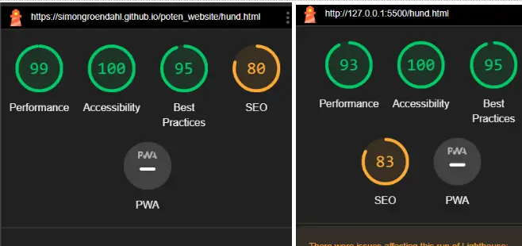
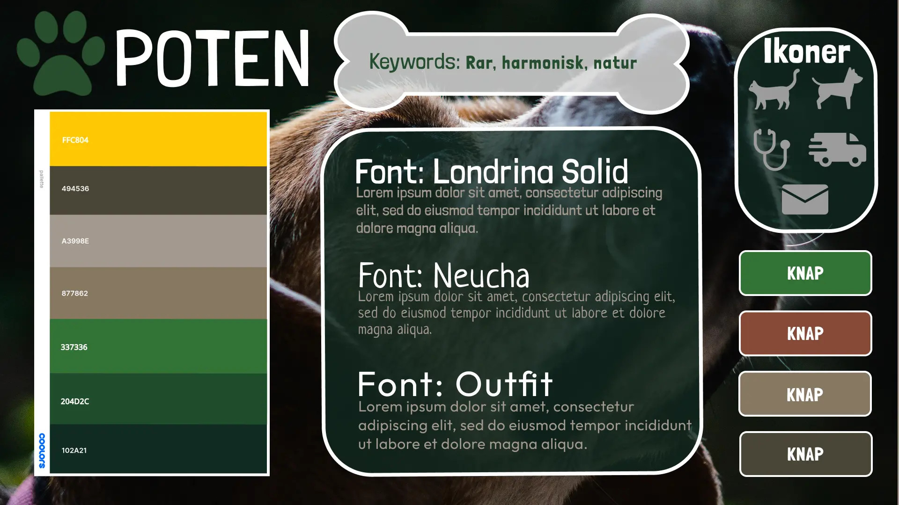

Tema 5
Tema 5 var omkring videoproduktion og case-arbejde. Undervisningen introducerede teori både om pre- og postproduktion af videoindhold. Jeg fik lavet to websider til temaet.
Videosite
Den første opgave var et videosite. Til mit videosite fik jeg mulighed for at interviewe Mathias Meulengracht. Han er production manager og co-founder af RPM records, hvor de presser vinylplader. Sammen med min medstuderende Simon Grøndahl Laursen, tog vi ud til firmaet for at lave en 60 sekunders video ud fra et interview med Mathias.
Vi valgte at interviewe Mathias, fordi han har stor passion for musik, og arbejder med den passion hver dag. Til projektet var jeg både med til at planlægge og filme et interview. Simon og jeg filmede også en masse B-roll footage, og tog billeder af lokalerne og medarbejderne. Vi havde lånt mikrofon, lys og kamera fra skolen, for at få den bedste lyd og kvalitet vi kunne. Alt indhold vi skød redigerede og sammensatte jeg selv, til mit eget videosite.
Min video omkring Mathias fra RPM records

Billede A.
Billede B.

Billede C.
Som et personligt touch lavede jeg min egen grafik til transitions og effekter. Jeg brugte Illustrator, som jeg havde skabt bekendtskab med i tema 4. Ved at eksportere illustrator-filerne til .png-filer, kunne min vektorgrafik bruges over videoen i Premiere Pro.
Kodning af sitet
Videositet jeg kodede bestod af bearbejdede billeder, og selvfølgelig, min video. Jeg satte videoen ind på mit domæne, hvor jeg kunne linke til den lokalt. Jeg lavede også et identisk site, hvor videoen blev lagt ind fra YouTube med et iFrame tag. På de billeder jeg tog, redigerede jeg farverne og kontrasterne i Photoshop. Selve sitet endte med at ligne en slags filmplakat.
Perspektivering
Jeg lavede ikke et mere meningsfyldt design for sitet, som jeg ellers havde gjort i tema 3 og tema 4. Hvis der var noget jeg ville gøre bedre i opgaven, ville jeg bruge designprincipper til at udarbejde et styletile og moodboard. Jeg syntes at site og indhold er meget mere harmonisk sammen, hvis jeg har lagt tanke i UI elementerne.
Opgaven gav mig en god forståelse om udstyr til videoproduktion. Også redigering af lyd i Audition og videomateriale i Premiere Pro var vigtigt at have arbejdet med inden den næste opgave i temaet.
Re-design af virksomhedssite
I den næste opgave skulle vi i grupper redesigne en virksomheds hjemmeside. Jeg kom i en gruppe med Simon Grøndahl Laursen og Frida Alberte Bendorff. Vi fandt en kæledyrsbutik på Amager kaldt Poten Amager. Efter at vi havde kontaktet ejeren og forklaret ham vores projekt, sagde han ja til at hjælpe os.
Det eksisterende site
Virksomhedens site havde en rodet struktur. Nogle af undersiderne havde ikke noget indhold, og en del af UI elementerne var smagløse stock images. Derfor synes vi at der var meget vi kunne prøve at arbejde med. For at analysere brugernes opfattelse lavede vi en BERT test. Ud fra testen fik Potens side følgende svar:
De parametre der var fuldkommen eller næsten hel enighed iblandt, var at hjemmesiden var kedelig, billig, lav kvalitet og amatør i stilen. De parametre hvor der var størst uenighed i svar, var om hjemmesiden gav den ønskede information og om den var tiltalende.
Svarene stemte godt overens med de iagttagelser og analyser vi havde lavet sammen i gruppen. Fordi der er så meget af siden der mangler eller er af dårlig kvalitet, giver det sitet en ufærdig fornemmelse. Samtidig er der nogle steder som efterlader brugeren tvivlsom omkring hvad der menes, for eksempel i deres meget korte produktbeskrivelser. Vi tog også en lighthouse test, og tog de svar i betragtning. Se figur A og B for lighthouse testssvar.
Figur A - Eksempel af lighthousetest resultater på Potens nuværende site
Figur B - Ekspempel på lighthousetest på vores redesignede side.
Figur C - Moodboard site
Figur D - Styletile.
Research
For at matche virksomhedens forretningskoncept, undersøgte vi deres budskab. Poten havde mest fokus på kæledyrenes foder. De sælger en speciel sund slags foder, og går meget op i bæredygtighed, råvare og sundhed. Målgruppen for Poten er voksne med enten hund eller kat og som omgås eller bor i København eller omegn. På deres site inviterer de køberne til at komme ind i butikken, for at få rådgivning fra medarbejderne til deres specifikke kæledyr. Alle produkter som de sælger er også til hund eller kat.
Altså kunne vi konkludere at Potens USP er deres foder og foderrådgivning. Til vores eget site tog vi de her punkter med i vores idéudvikling. Det var vigtigt for os at kommunikere deres specialisering for foder og dyr.
Design og idé
Ved at bruge de samme teknikker og principper fra tideligere oplæg, lavede vi i gruppen et moodboard og styletile til hvordan vi gerne ville have vores UI design til at se ud. Til det var vores vigtigste værdiord natur. Natur er også et ord som Poten selv giver udtryk for er en kerneværdi for dem.
Til UX design lavede vi sitemap, wireframe og prototype. Vi brugte Crazy Eights metoden til at idégenerere mulige layouts for siderne. Ellers arbejdede vi sammen i gruppen med Figma, til at få de grundlæggende layouts planlagt.
Den re-designede hjemmeside
Ved brug af GitHub fik lavede vi et fælles repository . Jeg blev tildelt siderne kat.html, og dertil undersiderne kat-foder.html, kat-lejetoj.html, og kat-legetoj.html. Også dyrlaege.html fik jeg kodet, og de tilhørende CSS sider kat-style.css, kat-pc-style.css og dyrlaege-style.css.
Sitet er kodet ud fra den viden jeg havde fået om html, CSS og JavaScript fra de tidligere temaer. Websiden er responsiv, og opsat så overskueligt som muligt. Ved at tage den info der var på Potens eget website, prøvede jeg at opstille produkter med et spændende layout design. Også info og viden om produkter og foder blev fremhævet for at lade Poten’s USP skinne endnu mere igennem.
Figur E - Screenshot af en menu jeg kodede på kat.html
Test af re-design
For at forbedre vores design lavede vi både en 5 sekunders test og tænke-højt test sidst i forløbet. Det gav os nye øjne på hvad vi kunne lave af sidste ændringer i vores kode. Vi udførte også en BERT test på vores eget site. Ud fra vores BERT test af Potens nye site kunne vi se en god forbedring. For eksempel var de parametre hvor der var fuldkommen eller næsten hel enighed blandt, at hjemmesiden er rar, høj kvalitet, naturlig og at man får den ønskede information.
Reflektion
Personligt syntes jeg at det var et spændende og lærerigt tema. Min gruppe var fantastiske til at holde SCRUM møder med og nemme at arbejde sammen med. Til mine kodede sider ville jeg gerne have scoret højere på mine lighthouse tests. Hvis jeg skulle gennemgå opgaven igen, ville jeg arbejde endnu mere med de svar vi fik på vores brugertests..
Tilbage til portfolie menu